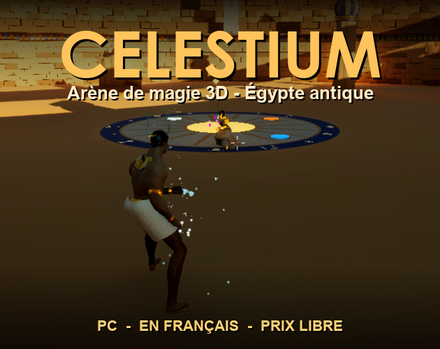
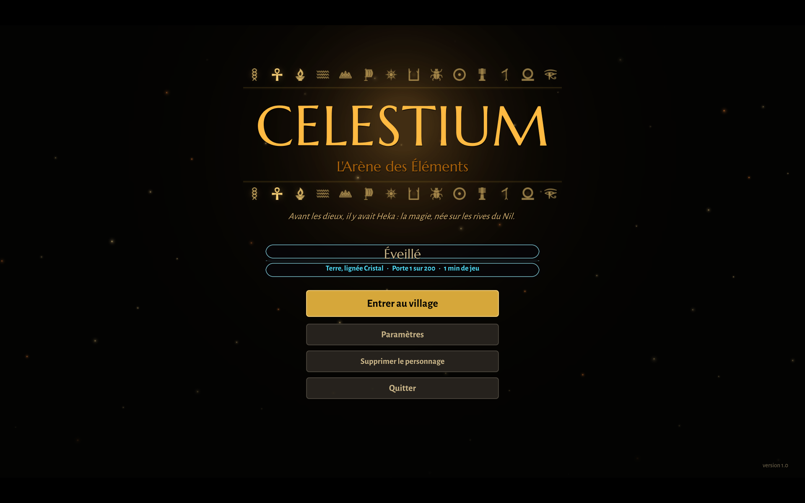

CELESTIUM — L'Arène des Éléments
Un action-RPG d'arène en 3D, sur PC, dans l'Égypte d'avant les dieux. Version actuelle : le prologue (village au bord du Nil + premier combat d'arène). Solo, Windows 64 bits, en français uniquement pour l'instant.

Télécharger sur itch.io (prix libre, dès 0 €)
Ce que tu fais
- Combat à la troisième personne : sorts, esquives, concentration pour recharger ton énergie Heka.
- Un test de 12 questions détermine ton élément (Feu, Eau, Terre, Air) et ton tempérament.
- 12 lignées, 120 pouvoirs à débloquer (rangs E à S).
- Arène contre l'IA, et arène classée contre des rivaux simulés hors ligne.

Ce qu'il faut savoir avant de télécharger
- C'est un prologue, pas le jeu complet.
- Clavier AZERTY : déplacement ZQSD, souris, touches F et Maj.
- Windows 10/11, carte graphique compatible DirectX 12. Téléchargement : environ 405 Mo.
- Prix libre : gratuit si tu veux, 5 € suggérés pour soutenir le développement.
Tes retours sur la prise en main et le premier combat m'aident beaucoup : écris-les en commentaire sur la page du jeu.